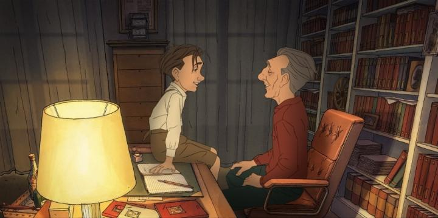
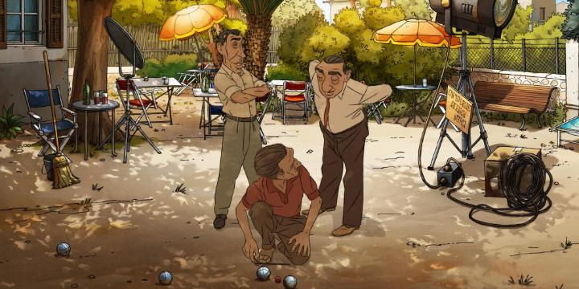

I tend to start my reviews with a long-winded introduction when the film merrits it. And Sylvain Chomet's long-awaited 2025 film "A Magnificent Life" definitely warrants some backstory. After the tremendous success of 2003's "The Triplets of Belleville," animator and filmmaker Sylvain Chomet was the toast of the animation community. His wildly exaggerated character designs paired with exceptionally crafted motion was refreshing. He followed up with 2010's "The Illusionist," which was in some ways more subdued, but to me, an even better film. That was a big time gap though, so fine, we'd have to wait until maybe 2017 for his next film? On the contrary, "A Magnificent Life" would take double the time. That's not to say Chomet wasn't busy. He animated a couch intro for The Simpsons in 2014, and animated a music video in 2015. He directed a few live action projects. He taught classes in animation schools. But the frustrating part is all the projects he started during this time, but never finished, many of which were publically announced. He announced starting his own animation college in France in 2019, but a lack of follow-up suggests this was abandoned. In 2012, he was preparing a prequel to "The Triplets of Belleville" (reports in 2025 suggest he's still working on a sequel or spinoff of some sort, but nothing has come of it yet). In 2014, he had begun work on "The Thousand Miles," inspired by Fellini in the way "The Illusionist" was inspired by Tati - planned for a 2017 release, the year came and went with no footage. After recent successes from South Korea, Chomet annouced an adaptation of the Korean novel "Familiar Things" in 2018. That's a lot of bouncing around between projects, announcing them prematurely before perhaps even a script was complete. Even "A Magnificent Life" didn't feel real for a long time - accquired by Sony Pictures in 2022, we didn't see a clip of it until 2024, and that teaser (under the working title "The Magnificent Life of Marcel Pagnol") was made of TEST FOOTAGE that ultimately wasn't in the final film, as if the project was still in the pitch stage to attract funding! Even when the finished film premiered for real in film festivals in 2025, there still weren't any trailers or footage, until months later. We relied on rumours of critics who claimed to have seen the film and... they weren't impressed. The biggest change in "A Magnificent Life" is voice. The remarkable thing about "Triplets" and "Illusionist" is that both were silent films, able to fully convey story to a universal audience purely with visuals. In hindsight, it makes sense why Chomet took this route, beyond the fact that a wordless script is difficult to write. This is a biopic of the real French director, playwright and writer, Marcel Pagnol. The written and spoken word was important to properly respect Pagnol's legacy; in the film he outright states he writes through dialogue, and found difficulty writing outside the format of a script. And Pagnol was from the county town of Marseille, which the film portrays as a region with a strong local accent that much confused the mainstream public in Paris. Much of Pagnol's work would take advantage of his unique upbringing and rely on the authenticity of the local voices he grew up with. Not only was the dialogue important, but so was the way it was spoken aloud. Unfortunately, the writing and acting is kind of terrible. The film was voiced in English (was there no French dub, for a French film about French voices?!), giving everyone strong English accents, and the Marseille accent replaced with that of the Welsh. The voices are as bold as Chomet's character designs. Problem 1) I couldn't understand half of what was said without subtitles. Problem 2) none of the dialogue feels like natural speech, but instead feels like a highly rehersed and edited script, which may have been intentional, but sounds strange in practice. Problem 3) each scene abruptly cuts after some exclaimation, statement or joke, but even when I think I understood the words, I didn't understand the humour or point of the line, causing the film to feel like a disjointed string of farily unimportant moments around someone shouting "the great Pang-yol!"

The direction is unexpectedly poor in conveying the story. Perhaps because the biopic tries to stuff Pagnol's entire life, a now commonly accepted faux-pas compared to choosing a focused subsection of the life. There are moments of inspiration though. The entire framing device is of an older Pagnol on the cusp of retirement from reduced public interest, encouraged to write a memoir for a friend's magazine. Waiting until the last moment of a deadline, he finds inspiration to start when he sees a ghost of his younger self - as he recounts his memories, this same spectre guides the young adult Pangol as he moves to Paris, finds his audience in stage plays, and eventually, his entry into film production with American producers. This ghost-boy version of Pagnol adds a bit of magical realism, a little charm in an otherwise dull adventure. There are also a number of inspired scenes - one that comes to mind is an adult Pagnol giving a private tour of the Paramount Studios lot, with commentary on both the amazing and hypocritical. In general, however unnatural the dialogue is, Pagnol is refreshingly mature and wise, especially his older version at the start of the film. Early on when Pagnol moves to Paris, there are direct paralllels to modern times, where locals question why he'd move to a town with a housing shortage. There are brief scenes I could single out as clever or inspired or relevant, but as a whole, there's a lack of direction to Pagnol's life, a lack of any semblance of an arc, and not much sense of what he accomplished in his life when it was all done. I can't help but wonder if I was missing something, and whether repeated viewings would help at all... And could a different framing of the scenes have helped? What if Pagnol was watching his life played out on a stage while he sat in the audience for the entire film? Or if he walked in and out of a projected film? "Millenium Actress" figured out how to do this well! It's not easy, but there must have been a way to do it...If nothing else, we'll always have Chomet's animation. There's a stronger push this time for 3D models and environments to allow for exciting camera pans and transitions, but thankfully, it isn't applied to the human characters. Designs look good, albiet not quite as wild as Chomet's most exciting work, as if, perhaps because many of these characters were real people, he tried to render them conservatively, only later trying to add "the Chomet touch" because that was what was expected. Music is surprisingly sparse, again in line with a spoken stage play.I'm grasping at straws, and relying on this movie being better on repeat viewing. "A Magnificent Life' is a rare mistep for Chomet, after a delayed gap between films that is longer than most filmmakers' entire careers. Will we ever see another film by Chomet? Maybe by 2040? Or would the delay double again, to 2055? And more importantly, would the next film be good? I've lost confidence in whether the old master's still got it. (EDIT: While hard to find, it appears a French dub version of the film does exist, and at least one clip is available online. I suspect this would at least fix one of the biggest problems - the inauthentic English voice acting for the setting, and would naturally include subtitles. I strongly recommend watching this in French if the option is present.) - "Ani" More reviews can be found at : https://2danicritic.github.io/ Previous review: review_A_Liar's_Autobiography_-_The_Untrue_Story_of_Monty_Python's_Graham_Chapman Next review: review_A_New_Dawn